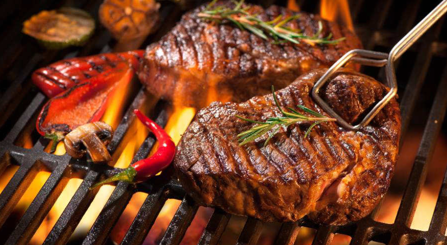
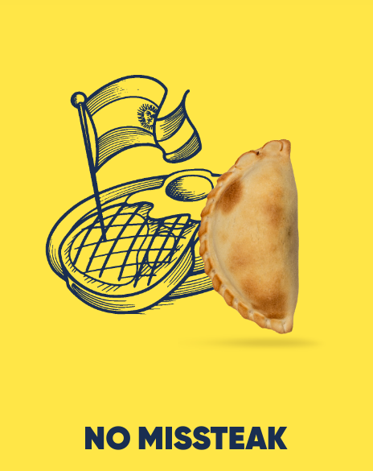
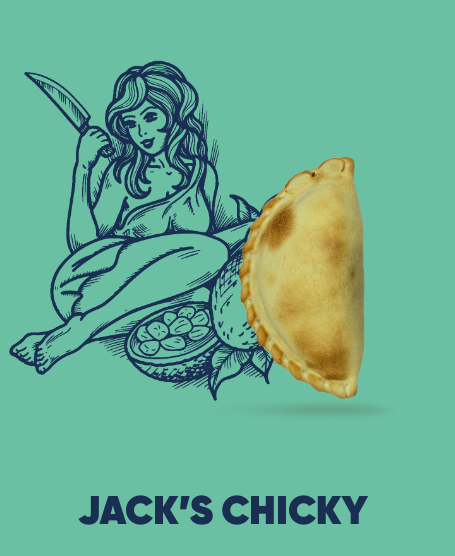

BRASAS ARGENTINAS

¡¡¡ Una experiencia gastronómica diferente !!!
En BRASAS ARGENTINAS estamos especializados en catering para eventos privados de reducidas o medianas dimensiones, ofreciendo una experiencia gastronómica diferente. Ideal para todo tipo de eventos al aire libre.
Ese es nuestro objetivo y así es como trabajamos.
Siempre con productos de primera calidad, garantizando que han sido expresamente elaborados para cada evento, y siempre volcados en dos ideas: la satisfacción del cliente y las sonrisas de todos sus invitados.
Cada fiesta, cada anfitrión y cada invitado es diferente. Siempre ofrecemos, en Catering Argentina, un servicio de catering exclusivo y personalizado de barbacoa a domicilio, adaptado a las necesidades y gustos de cada cliente.
¡Y más que eso! Una fiesta no está completa sin sus invitados. Por eso, para nosotros es fundamental la simpatía. En nuestro Catering BRASAS ARGENTINAS de asados a domicilio ofrecemos un trato cercano, amable y atento a todos los invitados para que esta sea una experiencia gastronómica única e inolvidable.
CATERING GOURMET DE PARRILLA ARGENTINA EN EL JARDÍN DE TU CASA


Servicios de parrilla Argentina exclusivo y personalizado
En BRASAS ARGENTINAS, siempre trabajamos con productos de primera calidad, garantizando que han sido expresamente elaborados para cada evento, y siempre volcados en dos ideas: la satisfacción del cliente y las sonrisas de todos sus invitados.
Cada fiesta, cada anfitrión y cada invitado es diferente. Siempre ofrecemos, en Brasas Argentinas, un servicio de catering exclusivo y personalizado de barbacoa a domicilio, adaptado a las necesidades y gustos de cada cliente.
¡Y más que eso! Una fiesta no está completa sin sus invitados. Por eso, para nosotros es fundamental la simpatía. En nuestro Catering Madrid de asados a domicilio ofrecemos un trato cercano, amable y atento a todos los invitados para que esta sea una experiencia gastronómica única e inolvidable
¿Porque elegirnos?
Somos 100% argentinos
Años de experiencia en los asados a domicilio de las mejores
carnes, pescados, mariscos, verduras y pizzas a la parrilla,
y la preparación de especialidades criollas de todo tipo.
Todo al más puro estilo argentino.
Carbón de 1º Calidad
No todas las brasas son iguales. El carbón importado de Sudamérica o el carbón de encina aporta un sabor único enriqueciendo cualquier carne con deliciosos matices; por eso hacemos el tradicional asado argentino a la parrilla a fuego lento delante de todos los invitados.
Corte Argentino
El asado argentino a domicilio más que una fiesta es todo un ritual en el que tenemos nuestra propia forma de cortar la carne: Tiras de asado, entraña, vacío, matambre, bife, lomo, chorizo criollo, morcilla, mollejas, riñones, chinchulines… Son algunos de los cortes de carne de ternera nacional de excelente calidad
Pizzas y Salsas
En nuestro servicio de Catering Madrid no solo utilizamos productos de la mejor calidad, sino que los preparamos nosotros mismos de forma artesanal y con mucho mimo. Nuestras pizzas a la parrilla y salsas caseras son un verdadero manjar !
Eventos personalizados
Nos adaptamos a todo tipo de celebraciones y organizamos la barbacoa a domicilio en función de los deseos de cada anfitrión y sus invitados. Catering Madrid para cumpleaños, catering Madrid para bodas, catering Madrid para despedida de soltera o soltero, catering Madrid para comuniones o catering para empresas...
Despreocupación total
No entramos en las cocinas en ningún momento. Además, no es necesario tener parrilla en casa, nosotros llevamos también nuestra parrilla y nos encargamos de preparar todo. Solo es necesario tener un lugar al aire libre donde podamos instalarnos.
Nuestras entradas son de Hola Empanadas